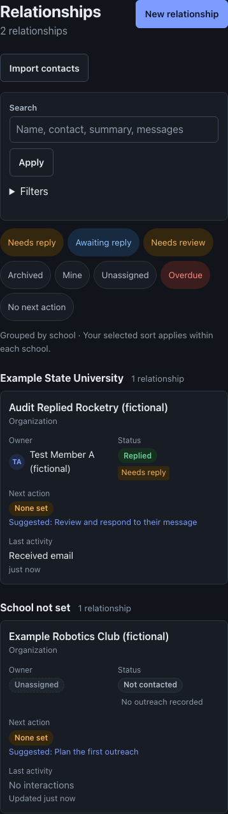

Reqest: discovery and delivery
Spending requests, approvals and budgets for student organizations. Explore Reqest · Browse the fictional demo.
Founder · Discovery, requirements and AI-assisted delivery. I built the first version through August 2026; a technical co-founder joined in September 2026. I lead a six-person Anre AI project team including four engineers (Oct 14, 2026 account).
From conversations to product work
I booked 2 discovery calls through cold email, with Purdue Space Program and TAMU SRT (Jul 30, 2026). That research and the delivery example below are separate evidence.
Returning users also needed reliable access without repeatedly opening email. After a co-founder reported a sign-in failure, I specified password access with an email-code fallback, preserving existing accounts.
A returning user enters their email and password once and reaches the app. They should not need to open an email or re-enter their email on a confirmation screen.
My technical co-founder approved the plan; AI agents implemented it, and the change merged. Local journey checks used a simulated authentication provider. Preview-hostname and real password-manager checks remained incomplete; no conversion lift was measured.
Outreach workflow
I built a shared CRM to keep relationship ownership, conversation history and next actions together. A local trial of an existing CRM failed three collaboration checks: exclusive ownership, stale-edit rejection and immutable draft history.

Recorded import, Oct 9, 2026: 23 teams and 41 contacts, 0 errors. These are imported records, not customers or sales. Workflow, trial and import notes (TXT).
Current usage
CalSol has put real purchase requests through Reqest. I also work on CalSol’s business side. This is my account as of Nov 13, 2026, without a measured request count or outcome improvement.